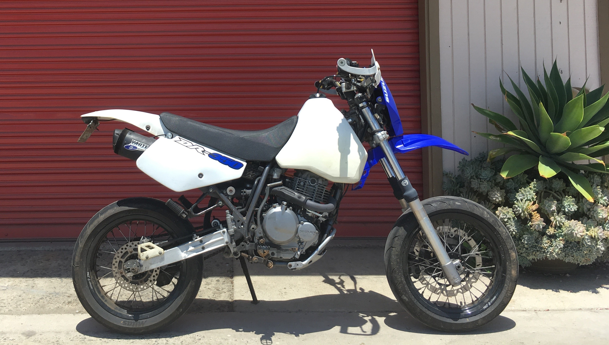

Motorcycles
Custom builds, restorations, and performance upgrades—exploring everything from supermoto conversions to classic cruiser revivals.

OpenMBB: Open-Source Diagnostics for Zero Electric Motorcycles
A free desktop app that reads a Gen2 Zero's own diagnostics over the service port—battery health, error logs, and ride analysis, with a built-in simulator.

Reviving and Customizing Motorcycles
A journey through motorcycle restoration and customization—reviving classics, tuning performance, and converting enduros into supermotos.